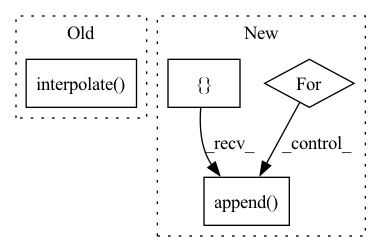

Pattern ID :18487

Before Change
x0_h, x0_w = x[0].size(2), x[0].size(3)
x1 = F.interpolate(x[1], size=(x0_h, x0_w), mode="bilinear", align_corners=True)
x2 = F.interpolate(x[2], size=(x0_h, x0_w), mode="bilinear", align_corners=True)
x3 = F.interpolate(x[3], size=(x0_h, x0_w), mode="bilinear", align_corners=True)
x = torch.cat([x[0], x1, x2, x3], 1)
After Change
def forward(self, features: List[Tensor]) -> Tensor:
Forward method.
input_image, *features = features
interpolated_feat = []
for feature in features:
interpolated = F.interpolate(feature, size=input_image.shape[2:], mode="bilinear", align_corners=True)
interpolated_feat.append(interpolated)
feats = torch.cat(interpolated_feat, 1)
x = self.last_layer(feats)
return x
In pattern: SUPERPATTERN
Frequency: 3
Non-data size: 4
Instances
Fragment ID: 60365245
Project Name: eora-ai/torchok
Commit Name: e6da29ed18aec5b4ae83cc9f5bd7e8bebf1c204d
Time: 2022-06-11
Author: patr982@gmail.com
File Name: src/models/necks/segmentation/hrnet_segmentation_neck.py
M Class Name: HRNetSegmentationNeck
N Class Name: HRNetSegmentationNeck
M Method Name: forward(2)
N Method Name: forward(2)
M Parent Class: BaseModel
N Parent Class: BaseModel
M File Name: src/models/necks/segmentation/hrnet_segmentation_neck.py
N File Name: src/models/necks/segmentation/hrnet_segmentation_neck.py
M Start Line: 31
M End Line: 39
N Start Line: 31
N End Line: 38
'>
Before Change
def forward(self, x: List[Tensor]) -> Tensor:
x0_h, x0_w = x[0].size(2), x[0].size(3)
x1 = F.interpolate(x[1], size=(x0_h, x0_w), mode="bilinear", align_corners=True)
x2 = F.interpolate(x[2], size=(x0_h, x0_w), mode="bilinear", align_corners=True)
x3 = F.interpolate(x[3], size=(x0_h, x0_w), mode="bilinear", align_corners=True)
x = torch.cat([x[0], x1, x2, x3], 1)
After Change
def forward(self, features: List[Tensor]) -> Tensor:
Forward method.
input_image, *features = features
interpolated_feat = []
for feature in features:
interpolated = F.interpolate(feature, size=input_image.shape[2:], mode="bilinear", align_corners=True)
interpolated_feat.append(interpolated)
feats = torch.cat(interpolated_feat, 1)
x = self.last_layer(feats)
return x
'>
Fragment ID: 60365247
Project Name: eora-ai/torchok
Commit Name: e6da29ed18aec5b4ae83cc9f5bd7e8bebf1c204d
Time: 2022-06-11
Author: patr982@gmail.com
File Name: src/models/necks/segmentation/hrnet_segmentation_neck.py
M Class Name: HRNetSegmentationNeck
N Class Name: HRNetSegmentationNeck
M Method Name: forward(2)
N Method Name: forward(2)
M Parent Class: BaseModel
N Parent Class: BaseModel
M File Name: src/models/necks/segmentation/hrnet_segmentation_neck.py
N File Name: src/models/necks/segmentation/hrnet_segmentation_neck.py
M Start Line: 31
M End Line: 39
N Start Line: 31
N End Line: 38
'>
Before Change
gcam = torch.mul(fmaps, weights).sum(dim=1, keepdim=True)
gcam = F.relu(gcam)
gcam = F.interpolate(
gcam, self.image_shape, mode="bilinear", align_corners=False
)
B, C, H, W = gcam.shape
gcam = gcam.view(B, -1)
gcam -= gcam.min(dim=1, keepdim=True)[0]
After Change
grads = self._find(self.grad_pool, target_layer)
weights = self._compute_grad_weights(grads)
gcam_tensor = self.generate_helper(fmaps, weights)
gcam = []
for i in range(self.logits.shape[0]):
gcam.append(gcam_tensor[i])
return gcam
'>
Fragment ID: 60365246
Project Name: karol-g/gcam
Commit Name: 4d3673129f7f35d0b6ea05944a037268b4da45b2
Time: 2020-01-02
Author: KarolGotkowski@gmx.de
File Name: evaluation_models/grad_cam/grad_cam.py
M Class Name: GradCAM
N Class Name: GradCAM
M Method Name: generate(2)
N Method Name: generate(2)
M Parent Class: _BaseWrapper
N Parent Class: _BaseWrapper
M File Name: evaluation_models/grad_cam/grad_cam.py
N File Name: evaluation_models/grad_cam/grad_cam.py
M Start Line: 209
M End Line: 228
N Start Line: 231
N End Line: 244
'>
Before Change
assert inMask.dim() == 4, "mask must be 4 dimensions"
inMask = inMask.float()
ntimes = 2**nlayers
inMask = F.interpolate(inMask, (inMask.size(2)//ntimes, inMask.size(3)//ntimes), mode="nearest")
inMask = inMask.detach().byte()
return inMask
After Change
assert inMask.dim() == 4, "mask must be 4 dimensions"
assert inMask.size(0) == 1, "the first dimension must be 1 for mask"
inMask = inMask.float()
convs = []
inMask = Variable(inMask, requires_grad = False)
for id_net in range(conv_layers):
conv = nn.Conv2d(1,1,4,2,1, bias=False)
conv.weight.data.fill_(1/16)
convs.append(conv)
lnet = nn.Sequential(*convs)
if inMask.is_cuda:
lnet = lnet.cuda()
'>
Fragment ID: 60365249
Project Name: kumapowerliu/rethinking-inpainting-medfe
Commit Name: 17d04d208950c9c4e2e8bc5251cf06205ec15285
Time: 2020-11-07
Author: 33801357+KumapowerLIU@users.noreply.github.com
File Name: util/util.py
M Class Name: AnonimousClass
N Class Name: AnonimousClass
M Method Name: cal_feat_mask(3)
N Method Name: cal_feat_mask(2)
M Parent Class:
N Parent Class:
M File Name: util/util.py
N File Name: util/util.py
M Start Line: 78
M End Line: 83
N Start Line: 76
N End Line: 93